Show the code
using Plots
using DataFrames
using CSV
using HTTP
using ZipFile # for unzipping the file
# download the data
url = "https://api.worldbank.org/v2/en/indicator/NY.GDP.MKTP.KD?downloadformat=csv";
download(url, "gdp_growth.zip");
# unzip the file
r = ZipFile.Reader("gdp_growth.zip");
for f in r.files
if endswith(f.name, ".csv") && !(startswith(f.name, "Metadata"))
growthfn = f.name
write(open("growth.csv", "w+"),read(f, String));
end
end
df = DataFrame(CSV.File("growth.csv", header=0, normalizenames=true, silencewarnings=true));
world = df[df[:,1] .== "World", :];
gdp = select(world, Not(1:5))
vecGDP = permutedims(gdp)[:,1]
dataYears = length(vecGDP)
years = collect((2021 - dataYears +1):2021);
plot(years, vecGDP, label="Total GDP (in 2015 \$)", xlabel="Year", ylabel="Total GDP (in 2015 \$)", legend=:topleft, title="Total GDP (in 2015 \$) from 1968 to 2021", background_color="#7711d708")